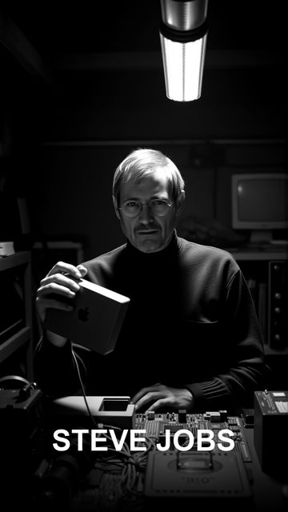

34 episodes produced so far, each covering one historical or public figure in under 90 seconds.
Dive into the life of Sigmund Freud, the father of psychoanalysis who shaped modern psychology.
Discover the hidden struggles and relentless dedication of Karl Marx, a philosopher whose ideas changed the world despite personal hardships.
Discover the turbulent life of Friedrich Nietzsche, a self-taught philosopher whose revolutionary ideas only gained fame posthumously.
Discover the fascinating life of Immanuel Kant, a philosopher who changed the world from his hometown.
Discover the fascinating journey of Platon, the photographer whose iconic portraits have graced over 100 international publications.
Explore the life of Sokrates, the ancient philosopher whose teachings shaped the Western world.
Dive into the life of Aristoteles, an ancient genius whose influence spanned philosophy to marine biology.
Nikola Tesla, the ingenious inventor, envisioned a world of wireless energy but faced financial obstacles.
Discover the untold story of Wolfgang Amadeus Mozart, a musical prodigy who transformed classical music.
Discover the incredible journey of Ludwig van Beethoven, a composer who defied the odds.
Discover the lesser-known artistic side of Winston Churchill, whose indomitable spirit and creativity extended beyond his iconic leadership.
Discover the untold story of Napoleon Bonaparte, the ambitious conqueror who reshaped Europe.
Discover the untold story of Charles Darwin's perilous journey that reshaped our understanding of life.
Marie Curie's journey from a determined student in Warsaw to a groundbreaking scientist in Paris is inspiring.
Discover the incredible journey of Abraham Lincoln, a man who rose from humble beginnings to reshape history.

Steve Jobs revolutionized technology, transforming Apple from a garage startup to a tech giant.
Born from humble beginnings, Madonna's journey to becoming a pop icon is a testament to her relentless spirit and unparalleled talent.
Discover the hidden depths of Marilyn Monroe, a Hollywood icon with a surprising passion for literature.
Discover the untold story of Usain Bolt, the fastest man alive, who not only broke records but also pursued unexpected passions.
Discover the untold stories of Muhammad Ali, a boxing legend who defied the odds and transcended the sport.
Discover the incredible journey of Nelson Mandela, a man who transformed from a rural village boy to a global icon of justice and equality.
Explore the enigmatic life of Vincent van Gogh, a genius who created over 900 paintings in just a decade.
Discover the extraordinary journey of Galileo Galilei, the dropout who revolutionized astronomy and dared to challenge the status quo.
Discover the lesser-known journey of Martin Luther King Jr., a man driven by a powerful dream.
Discover the lesser-known side of Isaac Newton, the brilliant mind who changed the world of science forever.
Leonardo DiCaprio is more than just an iconic actor; he's a passionate environmentalist who has donated over $100 million to conservation.
Witness the inspiring journey of LeBron James from humble beginnings in Akron to becoming one of the greatest basketball legends.
Discover the transformative journey of Pablo Picasso, a true pioneer who reshaped modern art with his innovative spirit and boundless creativity.
Dive into the enthralling life of Kleopatra, a woman whose beauty was matched only by her political acumen and intellectual prowess.
Whitney Houston's voice touched millions, but her story is filled with unexpected turns and triumphs.
Discover the untold story of Elvis Presley, from his humble beginnings to his unprecedented global success.
Discover the incredible journey of Mike Tyson, from overcoming adversity to becoming the youngest heavyweight champion.
Dive into the life of Leonardo da Vinci, a visionary whose inventions were centuries ahead.
Albert Einstein, the genius behind the theory of relativity, transformed our understanding of the universe.